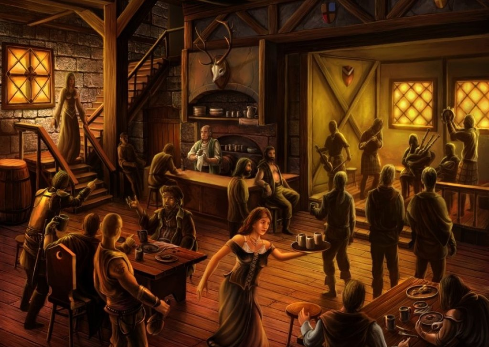

Llegaste a la taberna
La taberna esta llena, el tabernero está en la barra y no muy lejos se encuenta un aventurero borracho hablando para si mismo.
¿Qué vas a hacer?
Le pides al tabernero que te sirva una copa
Le plantas cara al aventurero
Tal vez el aventurero tenga una misión
